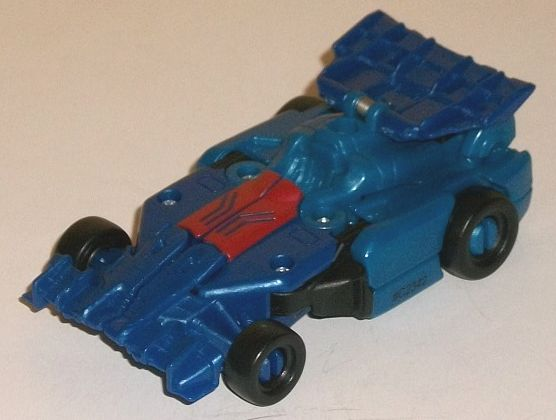
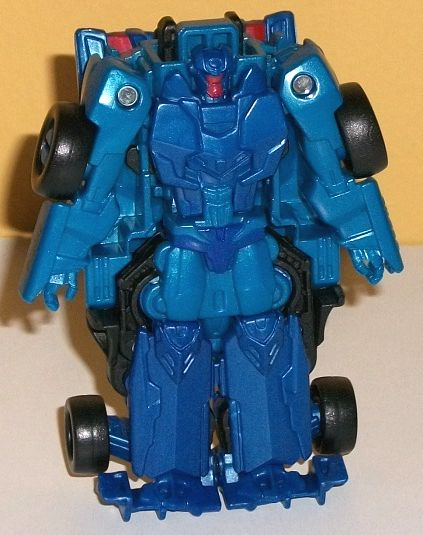
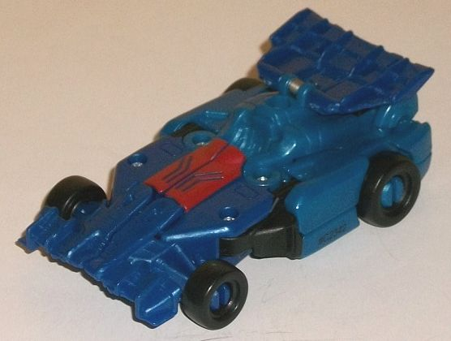
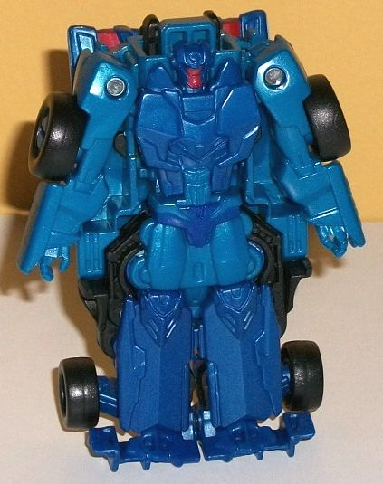
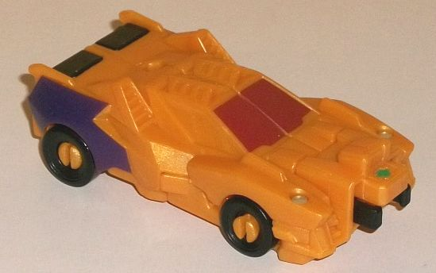
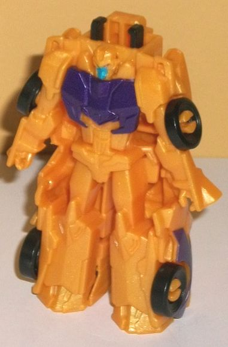
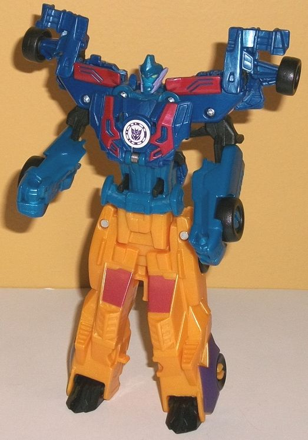

 
Difficulty of Transformation : Very Easy
Color Scheme : Dark milky semi-metallic blue, moderately dark milky semi-metallic blue, and some black, dull forest green and dark glossy red
Individual Rating : 4.0
Allegiances
: Decepticon
Size
: Crash Combiner 2-pack
Overall Rating
: 4.8
 Drag
Strip
Drag
Strip


Difficulty of Transformation
: Very
Easy
Color Scheme
: Dark milky semi-metallic
blue, moderately dark milky semi-metallic blue, and some black, dull forest
green and dark glossy red
Individual Rating
: 4.0
Drag Strip's alt mode,
as usual, is a race car, but it's... it's BLUE? What the...? This ain't
Mirage
here, Hasbro! This is a HUGE mistake-- they actually switched the colors
of the two toys in this pack! Drag Strip has Wildbreak's colors and visa
versa! I don't even wanna
think
how many people had to look the
other way for something like this to happen... anyways, ignoring that,
the F1 race car alt mode's main weakness is that its proportions are a
bit squat, with it being noticeably wider than it should be proportionally.
Still, it does have all the "required" F1 details on there, like a ridged
front bumper, an open cockpit for a driver, and a raised rear spoiler.
(In a rather ingenious little twist, Drag Strip's spoiler is actually the
combined mode's chest flipped backwards.) There's some surprisingly well-detailed
bits in the driver's seat and on the front bumper and behind the front
wheels; unfortunately, as is common with Crash Combiners, they aren't painted.
Other than that, his mold detailing is a little on the sparse side-- i.e.,
the RID2015 average. The color scheme is, as mentioned, mostly blue-- two
shades of blue, in fact, with a darker shade on the front half and spoiler,
and only a slightly lighter, more aquamarine-ish shade on the back half
of the toy. Both shades are semi-metallic, as they have some glitter in
them. They're both decent colors, but they don't contrast against each
other enough-- the lighter shade needed to be several shades lighter for
some more visual interest. There's also a bit of black on the wheels and
some minor connector parts. As far as paint, beyond the dull forest green
used on the arrow for the combination port (on the back end of this mode),
the only other paint apps are the dull red on the "window" in front of
the cockpit. There's some nice contrast there, but that's WAY too little
paint for this mode.
Stand Drag Strip up
on his front end (which you fold back a bit), fold out the arms some from
the sides, and then open up his chest and fold out the robot head before
closing it all up again-- his transformation is pretty similar to most
other Crash Combiners' individual robot modes. The end result is also mostly
the same, being just mostly molded into the bottom of the vehicle mode.
There's some pretty substantial kibble as a result of this, mostly big
bits of his race car mode just bulging out from what should be a narrow
main body and from the sides of his upper legs-- it doesn't look that great.
There's some pretty nice "crumpled up vehicle front" details on his chest
and waist, and his legs have some angular knee caps and flat feet that
are made from folding his front bumper back a bit. His arms have some divots
around the elbows, but are largely generic. His headsculpt has round "ears",
a fairly round head with a slight indentation above the forehead, and a
"normal" face with two eyes and guards on the sides of his face. His face
itself is painted dull red, but that's it beyond the two different shades
of blue and a bit of black in this mode. There are a few blue piant apps
around the waist to mix things up a little, but he's still vastly underdetailed,
and his two main colors are, again, just too similar in this mode. As with
most Crash Combiners, he can only move his shoulders outward and inward
in this mode-- no other articulation can be utilized, here.
 Wildbreak
Wildbreak


Difficulty of Transformation
: Very
Easy
Color Scheme
: Light milky semi-metallic
orange and some metallic dark purple, black, moderately light blue, dull
forest green, and dull glossy red
Individual Rating
: 4.2
Wildbreak is one of the
rather generically-named Stunticons that replaces the "traditionally-named"
Stunticons like
Breakdown
who died in Prime.
Anyways, in alt mode Wildbreak is a rather angular, futuristic sportscar.
There's seriously angles all over this dude, from the angular vents to
the sides of his roof (which is also angled with similar vents), diagonal
side windows, angular front windows, and some more pointy details molded
on the side of this mode. The front section is a bit more rounded, given
that the very front section forms his robot shoulders, and his front grill
has been replaced with a combination port. He doesn't really have much
of a back end either, as it's just the combined mode feet folded in without
any rear bumper or exhaust port details molded in them. There is a port
on the roof behind the ridged sections that allows you to plug in a Mini-Con
Weaponizer or weapon with a similarly-sized handle onto the top for some
firepower in this mode. As far as the color scheme, since they screwed
up Drag Strip with Wildbreak's color scheme, it means Wildbreak gets Drag
Strip's. It's mostly a light, milky orange shade with some glitter mixed
in to make it semi-metallic, with just a hint of yellow in it. It looks
quite good, and definitely better than your usual Drag Strip plain yellow.
There's some black used on a few parts-- such as the feet on the back end,
the wheels, and part of the connection port-- but it's a minor color. In
fact, all of the other colors are used sparingly, like the delicious metallic
dark grapey purple on the rear sides of this mode, the dull glossy red
on the front windows, and of course the little bit of dull forest green
used on the arrow on his combination port. I wish a bit more purple had
been used on the sides to help with contrast more, and that the side windows
were painted dull red as well, but he's not SUPER barren paint-wise in
this mode, unlike some other Crash Combiner toys.
Like with most Crash
Combiners, to get Wildbreak into his robot mode you stand him up on his
back end, open the chest and fold out his head before closing it again,
and then spread out his arms and legs a little. Yes, he is very much just
molded into the bottom of his vehicle mode, like most Crash Combiner individual
robot modes. The mold detailing is fairly good, though, with some nice
angular kneecaps and folded-together toes, an entire chest, ab, and waist
section that looks like it's made up of crumpled car parts, and... well...
fairly generic arms and hands, again. His head looks a lot like
RID2015
Starscream's
, just in different colors, as he has a center forehead
vent, small crests on the side leading down to small bits lining his chin,
and a "normal" face and eyes. His eyes are painted red and his face light
blue, with a metallic purple chest. Unfortunately, that's all the paint
in this mode, so this is yet another example of a Crash Combiner toy who
has tons of molded-in details in the robot mode that just aren't painted
at all. For articulation, he can move his arms side-to-side at the shoulders
and his legs side-to-side SLIGHTLY at the hips, but that's it-- he's pretty
close to a brick.
 Dragbreak
(Combined Form)
Dragbreak
(Combined Form)

Difficulty of Transformation
: Easy
Individual Rating
: 6.3
The combined form of
this toy has the rather weird name of Dragbreak (though I suppose it's
certainly better than the other potential possiblity, Wildstrip), and believe
it or not, it's actually the only Crash Combiner that appeared on the show.
Anyways, like with many of the Crash Combiner combined forms, the legs
aren't particularly impressive; they're just literally the halves of Wildbreak,
but with feet folded out on the bottom. The top half looks considerably
better, with the only weak part up top being the arms, which are a bit
oddly shaped, being too long for the lower arms and too short for the upper
arms. The chest is pretty solid with some "crumpled car" detailing on the
chestplate, some slim stomach detailing, and the waist has a nice faux
F1 race car fin molded into it-- I love it when they incorporate aspects
of the car body into the overall design so nicely. The shoulders are made
up of the front half or so of Drag Strip's vehicle mode, but folded up
a bit. I think it enhances the silhouette quite well, giving Dragbreak
unique shoulders and helping him stand out amongst other Crash Combiners.
That said, they aren't remotely show-accurate-- on the show model, he's
got rather
Prime Megatron-esque
shoulder
designs instead. The head is pretty show-accurate, though, with the side
spikes of Wildbreak (but painted purple) and the blue angry face of Drag
Strip, complete with yellow eyes. He's got a little crown on his head,
which isn't part of either of his constituent components, but certainly
fits a combined version. The face is a bit lighter than the surrounding
blue plastic, but still not as light as it should be, going by the show.
Beyond those couple of paint apps on the face, there's some more red on
the chest, but no other paint apps are unique to this mode. That said,
given the different shades of blue and yellow-- and the added bit of black
plastic on the upper body and the feet-- his color scheme is still fairly
varied. Too bad it's still flipped and wrong, ugh...
Since Dragbreak is the
only Crash Combiner to actually appear on the show, of COURSE they had
to completely flip the colors, and of COURSE it also happens to be one
of the weaker sets of the size class. Drag Strip has some decent molded-in
details in his race car mode, though it's quite squat and of course the
wrong color. Dragbreak's alt mode is decent, minus the really obvious connection
point and, again, wrong color. Their robot modes are pretty bad, though,
and the combined mode isn't that great beyond unique shoulders, and even
that
isn't accurate to the show. Only recommended for the fans of the characters
or completists.
Review by Beastbot